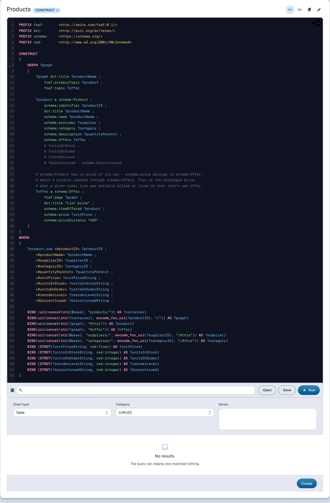

Query data
Learn how to query dataspace data with SPARQL, and save queries and charts
The end-user dataspace dataset is queried through the SPARQL 1.1 endpoint at the dataspace's sparql URL (e.g. https://localhost:4443/sparql). All forms of SPARQL queries are allowed; SPARQL updates are not allowed.
In the dataspace itself there is no separate editor page. A query is a resource like any other — it lives in a document, it has a URI, and other resources refer to it. Placing one in a block renders it as an interactive editor: the query text is editable, it runs against the service the query names, and the results render below it in whichever layout mode suits them. Editing the block edits the resource, so a query you refine is saved rather than retyped.

This is the demo's top-selling-products query, which drives a chart on the Northwind Traders dataspace:
PREFIX schema: <https://schema.org/>
SELECT DISTINCT ?productName (SUM(?sale) AS ?totalSales)
WHERE {
GRAPH ?orderGraph {
?order schema:orderedItem ?orderItem .
?orderItem schema:orderedItem ?product ;
schema:price ?sale .
}
GRAPH ?productGraph {
?product schema:name ?productName .
}
}
GROUP BY ?product ?productName
ORDER BY DESC(?totalSales)
LIMIT 5
Source: products.ttl — the same query drives the Top selling products chart
The endpoint is a standard SPARQL 1.1 Protocol service, so it can be queried programmatically as well:
curl -k -G "https://localhost:4443/sparql" \
-H "Accept: application/sparql-results+json" \
--data-urlencode 'query=PREFIX schema: <https://schema.org/> SELECT (COUNT(*) AS ?orders) WHERE { GRAPH ?g { ?order a schema:Order } }'
Live example
The block below is not a code snippet — it is an actual query block embedded in this document, executing against the Northwind Traders dataspace's SPARQL endpoint. The query, the service it runs against, and the block that places it here are three plain RDF resources in this very document.
Interactive block: Query another dataspace — executes live in the LinkedDataHub rendering of this page
Saving queries
To save the query string currently in the editor, click the Save button underneath the editor form. A document creation form opens with the query string pre-filled; you only need to supply titles for the query and its document. You can then access the query by navigating to the query container via the dropdown in the breadcrumb bar.
The editor will not save a query that is not valid SPARQL 1.1.
Saving charts
The SPARQL editor includes an interactive chart pane which can be used to visualize the query results. You can change the chart type, select its category and one or more series.
The chart pane handles both graph results (CONSTRUCT, DESCRIBE) and result sets (SELECT). For graph results, the category and series are
rendered from resource properties; for result sets, they are rendered from variable
names.
To save the chart with the properties currently selected, click the Save button underneath the chart pane. Two document creation forms open: one for the query, one for the chart that depends on it. The query string and chart properties are pre-filled; you only need to supply titles for the query, the chart and their document. You can then access the chart by navigating to the chart container via the dropdown in the breadcrumb bar.
See charts in action in the Insight tutorial stage, or read more about charts.